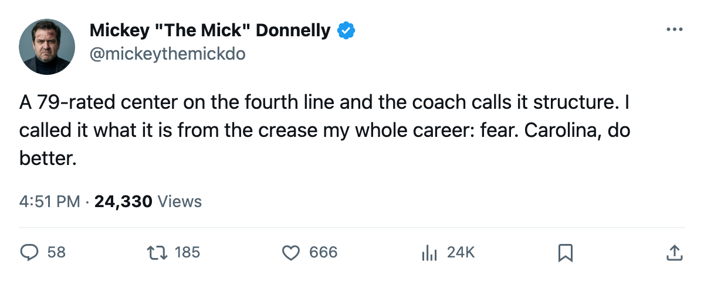
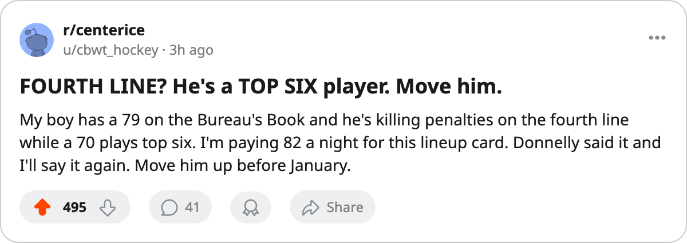

ATL
ATLFOURTH LINER? FOURTH LINER? A 79 ON THE FOURTH LINE AND THE COACH WON'T BUDGE
Radek Dvorak carries a 79 on the Bureau's Book and centers the fourth line. The coach runs a 70 ahead of him. Carolina is 10-12-5 and the lineup card is the whole story.
 Mickey "The Mick" DonnellyColumnist, ex-goalie · The Penalty Box
Mickey "The Mick" DonnellyColumnist, ex-goalie · The Penalty BoxI've said it before and I'll say it until the day I die: I hate fourth lines. They're where good players go to rot and bad players go to hide. I have never seen one quite this stupid.
The Bureau's Book has  Radek Dvorak79 at 79. That's 79 on the 50-to-99 scale, the number you need to be a real player, a man other teams build around. The
Radek Dvorak79 at 79. That's 79 on the 50-to-99 scale, the number you need to be a real player, a man other teams build around. The  Carolina Hurricanes coach has him centering the fourth line. Fourth. Line. The Bureau's own lineup sheet flags the mis-slot: Dvorak, 79, L4C.
Carolina Hurricanes coach has him centering the fourth line. Fourth. Line. The Bureau's own lineup sheet flags the mis-slot: Dvorak, 79, L4C.  Jaroslav Svoboda70 sits at 70 and plays the top six. A 79 below a 70. Three men rated above 70 are on the bottom two lines: Dvorak at 79 on the fourth,
Jaroslav Svoboda70 sits at 70 and plays the top six. A 79 below a 70. Three men rated above 70 are on the bottom two lines: Dvorak at 79 on the fourth,  Radim Vrbata78 at 78 on the third, and
Radim Vrbata78 at 78 on the third, and  Ben Clymer73 at 73 on the fourth right wing. All three above Svoboda.
Ben Clymer73 at 73 on the fourth right wing. All three above Svoboda.
Carolina is 10-12-5, 41 points, 103 goals for, 102 against. One goal above water on a $63.79M payroll, $1.56M a point. They are 9-10 at home and 9-7 on the road. The attendance sits at 16408 a night at $82 a ticket while the lineup card parks a 79 on the fourth line. That's what they're paying for.
This is not a talent problem.  Jeff O'Neill88 has 43 points in 35 games at a 88 overall carrying the top line, so someone can score. The problem is a coach who doesn't trust his own top six and buries his best available center where he can touch the puck the least.
Jeff O'Neill88 has 43 points in 35 games at a 88 overall carrying the top line, so someone can score. The problem is a coach who doesn't trust his own top six and buries his best available center where he can touch the puck the least.
I played behind bad defense for my whole career. You could read a lineup card from the crease. You saw it when a coach didn't trust his top six: he'd park a second-line guy on the fourth, make him kill penalties, ask him to do the dirty work nobody else would. It's not strategy. It's fear dressed up as structure. And the man on the fourth line knows it. The Morale Scale has Carolina at 90.8, 8th in the league's basement. You don't need the Bureau to tell a 79 why he's sitting at 90. You can see it on the card.
Atlanta visits on 2005-12-27. They are 5-12 on the road, on a four-game losing streak, 9-18-3 overall. The season series goes Carolina's way: 1 win, 1 overtime win, 8 goals to 6. This is the softest matchup a coach can get. If he can't dress a top six that makes sense against this club, nobody in the building is getting through to him.
I'm going on record: Dvorak plays top six by New Year's Eve or the coach needs to explain himself in a press conference I will attend and quote every word of.
CAR 4, ATL 2. The easiest test of December and if the card still says L4C, I'm done with this coach.

